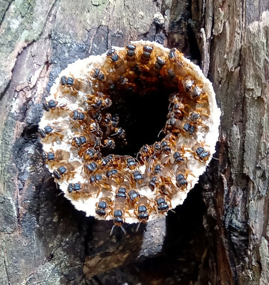
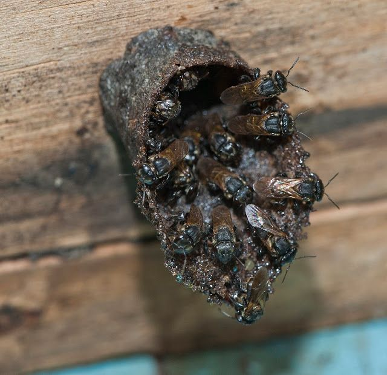

Características Gerais e Hábitos
As colmeias da abelha mandaguari amarela, ou abelha sem ferrão, são bastante distintas.
Elas geralmente são construídas em ocos de árvores, buracos no solo ou em estruturas artificiais.
Essas colmeias são compostas por vários favo de mel, que são feitos de cera e têm uma forma hexagonal,
como nas colmeias de abelhas com ferrão.

As operárias da abelha mandaguari amarela trabalham incansavelmente coletando néctar, pólen e resina para
alimentar a colmeia e construir o ninho. O néctar coletado é levado de volta para a colmeia, onde é processado e transformado em mel.

Mel Especial: O mel é geralmente suave e adocicado, com notas florais que variam conforme as plantas visitadas pelas abelhas.
A coloração pode variar de dourado claro a âmbar, dependendo da fonte de néctar. É rico em nutrientes, como vitaminas, minerais
e antioxidantes, tornando-se uma opção saudável. Tradicionalmente, o mel das abelhas sem ferrão é valorizado por suas propriedades
antimicrobianas e anti-inflamatórias.
Importância Ecológica: A abelha mandaguari amarela tem um papel ecológico crucial, especialmente em ambientes tropicais e subtropicais como
a Polinização, Biodiversidade, Produção de mel, Cadeia alimentar, Conservação de habitats.